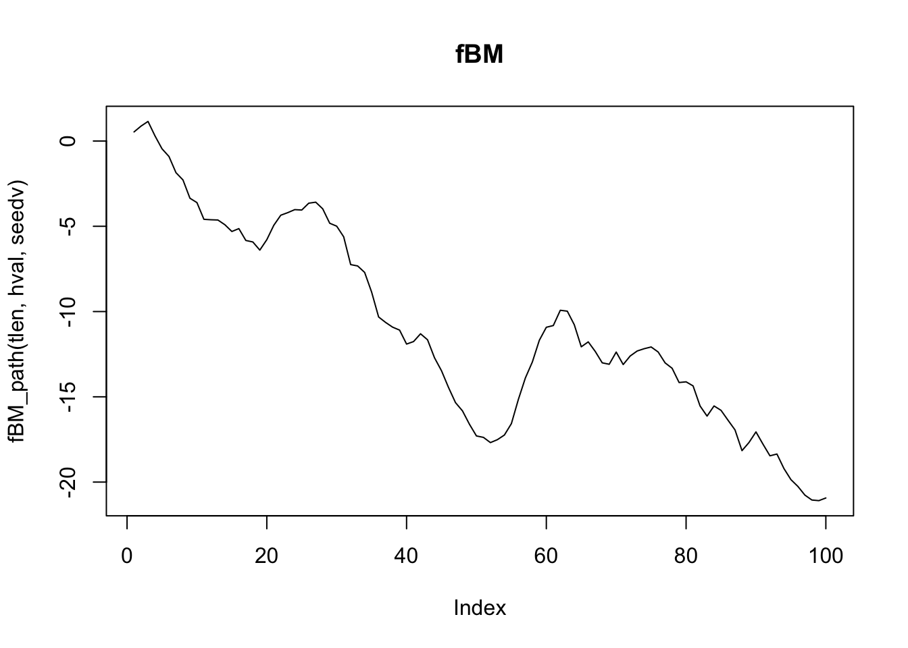
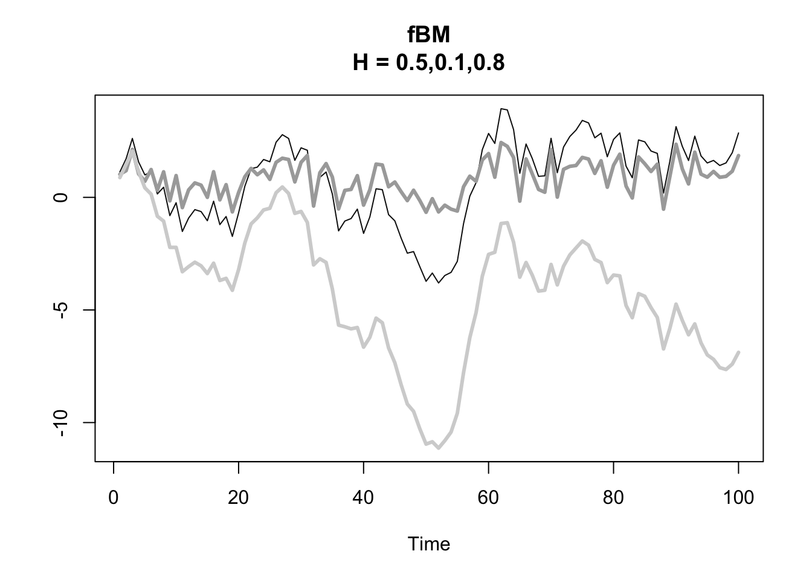

6 長期記憶過程
本章は, 長期記憶性 (long memory) (別名, 長期従属性 (long-range dependence)) を扱う. 長期記憶性は, 為替レート, 為替フォワード・プレミアム, 金利スプレッド, 株式の出来高, オーダー・フロー, ボラティリティなど, 様々な金融時系列において報告されている.
前章までで学んだARIMA(\(p,d,q\))モデルにおいて, 定常になるまでの差分の回数を表す\(d\)を, 非負の整数\(d\)から小数へと拡張したモデル, 自己回帰非整数平均 (Auto-Regressive Fractionally Integrated Moving Average) モデル, 略して, ARFIMA(\(p,d,q\)) モデルは, 離散時間の時系列解析における長期記憶過程の一つとして 重要なモデルクラスである. \(d\)を小数に取ることで, 長期記憶性を記述することができるようになっている.
\[ \phi(B)(1-B)^d X_t = \theta(B) Z_t \tag{2}, \quad -0.5<d<0.5\] ただし, 前章までと同様に,
- Backward shift operator \(B\)
- AR多項式 \(\phi(z)=1 - \phi_1 z - \cdots - \phi_p z^p\)
- MA多項式 \(\theta(z)=1 + \theta_1 z + \cdots + \theta_q z^q\)
このARFIMA(\(p,d,q\))過程は, “差分”パラメータの次数が \(-1/2 < d < 1/2\) の範囲の時, 定常 (かつ反転可能) となる.
特別な場合として, ARFIMA(\(0,d,0\))モデルがある (非整数和分白色ノイズ, fractionally integrated white noise). \[ (1-B)^d X_t = Z_t \tag{2}, \quad -0.5<d<0.5\]
一般のARFIMA(\(p,d,q\))モデルは, このARFIMA(\(0,d,0\))を駆動ノイズ (イノベーション過程) として持つようなARMA(\(p,q\))モデルであると解釈することができる. すなわち, \(W \sim ARFIMA(0,d,0)\)とすると, \((1-B)^d W_t = Z_t\)であるから, \[ \phi(B) X_t = \theta(B) W_t= \theta(B) \frac{Z_t}{(1-B)^d}, \quad -0.5<d<0.5\]
また, 定常なARMA(\(p,q\))モデルに対して, それを1回和分した非定常な過程であるARIMA(\(p,1,q\))モデルがあるように, 定常なARFIMA(\(p,d,q\))モデル (\(-1/2<d<1/2\)) に対して, 非定常なARFIMA(\(p,1+d,q\))モデルも存在する.
ARFIMAモデルにおける\(d\)の大きさの影響を知るには, このARFIMA(\(p,1+d,q\))のサンプルパスの持つ確率的トレンドの挙動をみると分かりやすい.
すなわち, \(d\)大きさにより, 時系列は次のような性質を持つ:
- \(0 < d < 1/2\):
- ARFIMA(\(p,d,q\)): 正の長期従属性, または持続性 (persistency)
- ARFIMA(\(p,1+d,q\)): 持続的なトレンドのサンプルパス
- \(-1/2 < d < 0\):
- ARFIMA(\(p,d,q\)): 負の長期従属性, 反持続性 (anti-persistency)
- ARFIMA(\(p,1+d,q\)): トレンドが持続せず, 素早く平均回帰するようなサンプルパス
- \(d = 0\):
- ARFIMA(\(p,d,q\)) \(\equiv\) ARMA(\(p,q\)) (短期記憶のみ)
- ARFIMA(\(p,1+d,q\)) \(\equiv\) ARIMA(\(p,1,q\))
本章ではまた, 長期記憶性を持つ, 連続時間の確率過程のクラス として重要な非整数ブラウン運動 fBM (fractional Brownian motion) についても簡単に触れる.
ハースト指数\(H\)は, 時系列データの長期記憶性を示す 指標の一つであり, 理論的には, fBMの増分過程 (非整数ガウスノイズ, fGN) に対する長期記憶性を表現する パラメータとして導入される.
上の\(d\)の場合分けに対応し, \(H\)の大きさにより,
- \(1/2 < H < 1\):
- fGNに正の長期従属性, または持続性
- fBMはトレンドの続くサンプルパス
- \(0 < H < 1/2\):
- fGNに負の長期従属性, または反持続性
- fBMはトレンドが続かない, 素早く反転するサンプルパス
- \(H = 1/2\):
- fGNは無相関 (独立)
- fBMは通常のブラウン運動. 過去のサンプルパスと未来のサンプルパスは独立.
この\(H\)と\(d\)の間には, \(H = d + 1/2\)なる関係が成立する.
本章では, Rを使用した, 所与の時系列データに対する\(H\)の推定方法についても紹介する.
6.1 長期記憶過程のシミュレーション
まず, Rパッケージを用い, 長期記憶性を持つ確率過程のサンプルパスを生成し, 視覚的に特徴を捉えてみよう.
パッケージfracdiffの利用
ARFIMA(\(p,d,q\))過程のシミュレーション
パッケージfracdiffに含まれる関数fracdiff.sim()を
使うことで, ARFIMA(\(p,d,q\))過程のサンプルパスを生成することができる.
ここで, fracdiffにおけるAR/MA多項式は, \(\phi(z) = 1 - \phi_1 z - \cdots - \phi_p z^p\), \(\theta(z) = 1 - \theta_1 z - \cdots - \theta_q z^q\) である. すなわち, MA多項式の各項の符号が講義内の表記と 反対になっていることに注意しよう.
まず, ARFIMA(\(p,d,q\))過程の長期記憶性を理解するために, AR項やMA項に起因する短期記憶性の影響を排除した, サブクラスであるARFIMA(\(0,d,0\))過程の挙動と, これを和分したARFIMA(\(0,1+d,0\))過程の挙動をシミュレートする.
- 持続性の場合 (\(d=0.4\))
tlen <- 300
seedv <- 100; set.seed(seedv)
library(fracdiff)
fds_sim <- fracdiff.sim(tlen, d = 0.4) # -0.5<=d<=0.5
x <- fds_sim$series # 長期記憶系列
par(mfrow = c(2, 1))
plot(x, type = "l", main = "ARFIMA(0,d,0)")
plot(cumsum(x), type = "l", main = "ARFIMA(0,1+d,0)")

- 反持続性の場合 (\(d=-0.4\))
set.seed(seedv)
fds_sim <- fracdiff.sim(tlen, d = -0.4)
x <- fds_sim$series # 長期記憶系列
par(mfrow = c(2, 1))
plot(x, type = "l", main = "ARFIMA(0,d,0)")
plot(cumsum(x), type = "l", main = "ARFIMA(0,1+d,0)")

- 無相関の場合 (\(d=0\))
set.seed(seedv)
fds_sim <- fracdiff.sim(tlen, d = 0)
x <- fds_sim$series # 長期記憶系列
par(mfrow = c(2, 1))
plot(x, type = "l", main = "ARFIMA(0,d,0)")
plot(cumsum(x), type = "l", main = "ARFIMA(0,1+d,0)")

次に, AR項やMA項の入っている一般のARFIMA(\(p,d,q\))の場合についてシミュレートする. ここでは, \(p=2,q=1\)に設定する. また, ここでも, ARFIMA(\(p,1+d,q\))のパスも合わせて表示する.
- 持続性の場合 (\(d=0.4\))
tlen <- 300
seedv <- 100; set.seed(seedv)
library(fracdiff)
fds_sim <- fracdiff.sim(tlen, ar = c(0.7, -0.2), ma = 0.1, d = 0.4) # -0.5<=d<=0.5
x <- fds_sim$series # 長期記憶系列
par(mfrow = c(2, 1))
plot(x, type = "l", main = "ARFIMA(p,d,q)")
plot(cumsum(x), type = "l", main = "ARFIMA(p,1+d,q)")
- 反持続性の場合 (\(d=-0.4\))
set.seed(seedv)
fds_sim <- fracdiff.sim(tlen, ar = c(0.7, -0.2), ma = 0.1, d = -0.4)
x <- fds_sim$series # 長期記憶系列
par(mfrow = c(2, 1))
plot(x, type = "l", main = "ARFIMA(p,d,q)")
plot(cumsum(x), type = "l", main = "ARFIMA(p,1+d,q)")

- ARMA/ARIMAの場合 (\(d=0\))
set.seed(seedv)
fds_sim <- fracdiff.sim(tlen, ar = c(0.7, -0.2), ma = 0.1, d = 0.1)
x <- fds_sim$series # 長期記憶系列
par(mfrow = c(2, 1))
plot(x, type = "l", main = "ARFIMA(p,d,q)")
plot(cumsum(x), type = "l", main = "ARFIMA(p,1+d,q)")
パッケージlongmemoの利用
ARFIMA, 非整数ガウス (fractional Gaussian) 過程の自己共分散関数
- ckARMA0(n, H):
ARFIMA(0,d,0) 過程の自己共分散関数の理論計算 (大きなkでは近似) (d = H - 1/2).# install.packages("longmemo")
library(longmemo)
seedv <- 1
tlen <- 100
hval <- 0.9
plot(ckARMA0(tlen, H = hval), type = "h")# H > 0.5の時のみ
plot(x = 0:(tlen - 1), ckARMA0(tlen, H = hval),
type = "h", log = "xy",
main = paste0("Log-Log ACF for ARFIMA(0,d,0)\nH = ", hval))
- ckFGN0(n, H):
非整数ガウス過程の自己共分散関数の理論計算ARFIMA, 非整数ガウス (fractional Gaussian) 過程のシミュレーション
シミュレーションを行う関数として, ARFIMA(\(0,d,0\))にはsimARMA0()が, 非整数ガウス過程にはsimFGN0が用意されている.
seedv <- 1
set.seed(seedv)
x1 <- simFGN0(tlen, H = hval) # 非整数ガウス過程
x2 <- simARMA0(tlen, H = hval) # ARFIMA(0,d,0)
ts.plot(ts.union(x1, x2), col = 1:2, lty = 1:2,
main = paste0("fGN vs ARFIMA(0,d,0): H = ", hval))
一般のARFIMA(\(p,d,q\)) (\(-1/2<d<1/2\)) のシミュレーションは, 以下のように, 関数simARMA0()を使ってイノベーション過程を生成し, それをarima.sim()に与えることで実現することもできる (AR/MAパラメータは数値ベクトルで指定する).
# ARFIMA(2, 0.3, 1)の実行例
# AR係数: phi_1 = 0.9, phi_2 = -0.5
# MA係数: theta_1 = -0.2
phi <- c(0.9, -0.5)
theta <- -0.2
d <- 0.3
x3 <- arima.sim(tlen, model = list(ar = phi, ma = theta),
innov= simARMA0(tlen, H = d + 1/2), n.start = length(phi) + length(theta))
plot(x3, main = "ARFIMA(p,d,q)")非整数ブラウン運動 (fBM) は, 非整数ガウス過程 (fGN) を増分過程とする確率過程であることから, fGNのサンプルパスを 累積することで, fBMのサンプルパスを得ることができる.
fBM_path <- function(tlen = 100, H = 0.5, sd_val = 1) {
set.seed(sd_val)
cumsum(simFGN0(tlen, H))
}
#
plot(fBM_path(tlen, hval, seedv), type = "l", main = "fBM")
Hurst指数を3通り (\(0.1, 0.5, 0.8\)) に変えてサンプルパスを生成し, 比較する.
# 異なるHの値でのサンプルパスの比較
hvals <- c(0.5, 0.1, 0.8)
fBM1 <- fBM_path(tlen, hvals[1], seedv)
fBM2 <- fBM_path(tlen, hvals[2], seedv)
fBM3 <- fBM_path(tlen, hvals[3], seedv)
ts.plot(cbind(fBM1, fBM2, fBM3), col = c("#111111", "darkgrey", "lightgrey"), lty = 1, lwd = c(1, 3, 3),
main = paste0("fBM\nH = ", paste(hvals, collapse = ",")))
次に, Hurst指数の推定や, ARFIMAモデルの推定を シミュレーションデータを用いて行う.
6.2 Hurst指数の推定
パッケージpracmaの利用
- hurstexp(): R/S分析によるHurst指数推定 (複数の方法を同時実行)
- 出力:
- Hs - simplified R over S approach
- Hrs - corrected R over S Hurst exponent
- He - empirical Hurst exponent
- Hal - corrected empirical Hurst exponent
- Ht - theoretical Hurst exponent持続性, 系列無相関 (独立),
反持続性の3つの場合について,
\(H = 0.72, 0.50, 0.43\) と設定された場合の
サンプルパスを使う.
x72はpracmaに収録されている予め生成された
サンプルパスである. xlmの生成手順は, pracmaの
マニュアルに従う.
library(pracma)
data(brown72)
x72 <- brown72 # H = 0.72
xgn <- rnorm(1024) # H = 0.50
xlm <- numeric(1024); xlm[1] <- 0.1 # H = 0.43
for (i in 2:1024) {
xlm[i] <- 4 * xlm[i - 1] * (1 - xlm[i - 1])
}- 持続性の場合 (\(H = 0.72\))
ここで, x72は平均が正の値を持っているため, 累積してfBMのパスを生成する際に
平均値を差し引いて (線形トレンドを除いてから) から可視化する.
par(mfrow = c(2,1))
plot(x72, type = "l", main = "fGN")
plot(cumsum(x72 - mean(x72)), type = "l", main = "fBM")
- ブラウン運動の場合 (\(H = 0.50\))
- 反持続性の場合 (\(H = 0.43\))
xlmはやはり平均値が正のため, fBMのパスを生成する際に 平均値を差し引いてから可視化する.
par(mfrow = c(2,1))
plot(xlm, type = "l", main = "fGN")
plot(cumsum(xlm - mean(xlm)), type = "l",main = "fBM")各々のパスから推定されるハースト指数は以下の通りである.
hurstexp(brown72) # d: smallest box size (default = 50)
#> Simple R/S Hurst estimation: 0.6628842
#> Corrected R over S Hurst exponent: 0.7378703
#> Empirical Hurst exponent: 0.6920439
#> Corrected empirical Hurst exponent: 0.6577233
#> Theoretical Hurst exponent: 0.5404756
hurstexp(xgn)
#> Simple R/S Hurst estimation: 0.4784489
#> Corrected R over S Hurst exponent: 0.4898617
#> Empirical Hurst exponent: 0.5041802
#> Corrected empirical Hurst exponent: 0.4636032
#> Theoretical Hurst exponent: 0.5404756
hurstexp(xlm)
#> Simple R/S Hurst estimation: 0.4762169
#> Corrected R over S Hurst exponent: 0.4722421
#> Empirical Hurst exponent: 0.4872281
#> Corrected empirical Hurst exponent: 0.4460807
#> Theoretical Hurst exponent: 0.54047566.3 ARFIMAモデルの推定
パッケージforecastの関数arfima()は,
ARFIMAモデルの自動選択&パラメータ推定を実行することができる.
これについては本章の最後に紹介することとし, その前に, 手動でパラメータの推定を行う方法について幾つか紹介する.
パッケージfracdiffの利用
真の確率過程がARFIMA(\(2,d,0\)) (\(d=-0.49\)) にも拘らず,
誤ってARモデルを選択し, ar()により推定した場合.
# library(fracdiff)
set.seed(seedv)
fds_sim <- fracdiff.sim(tlen, ar = c(0.7, -0.2), d = -0.49)
x <- fds_sim$series # 長期記憶系列
#
(ar_fit <- ar(x, method = "mle")) # 最尤法
#>
#> Call:
#> ar(x = x, method = "mle")
#>
#> Coefficients:
#> 1 2 3 4 5 6
#> 0.2060 -0.2321 -0.2082 -0.1717 -0.1534 -0.1875
#>
#> Order selected 6 sigma^2 estimated as 0.7814- → 大きい\(p\)を選択
パッケージfracdiff内の関数fracdiff()により, AR係数, MA係数, 階差次数\(d\)を最尤推定する (以下, \(p=2\)を正しくしていたと仮定).
# nar, nma # AR, MAパラメーター数
(fds_fit <- fracdiff(x, nar = 2))
#>
#> Call:
#> fracdiff(x = x, nar = 2)
#>
#> Coefficients:
#> d ar1 ar2
#> 4.583013e-05 3.478729e-01 -2.143891e-01
#> sigma[eps] = 0.9577181
#> a list with components:
#> [1] "log.likelihood" "n" "msg" "d"
#> [5] "ar" "ma" "covariance.dpq" "fnormMin"
#> [9] "sigma" "stderror.dpq" "correlation.dpq" "h"
#> [13] "d.tol" "M" "hessian.dpq" "length.w"
#> [17] "residuals" "fitted" "call"- → 通常は\(p,q\)は未知 → 引数nar, nmaは複数の候補を試すべき
パッケージnsarfimaの利用
パッケージnsarfima内の関数mle.arfima()により, AR係数, MA係数, 階差次数\(d\)を最尤推定する.
library(nsarfima)
# p, q # AR, MAパラメーター数
(arfima_fit <- mle.arfima(x, p = 2))
#> $pars
#> mu sig2 d ar.1 ar.2
#> -1.267263e-02 9.022758e-01 5.522776e-08 3.414323e-01 -2.625068e-01
#>
#> $std.errs
#> mu sig2 d ar.1 ar.2
#> 0.1016556 0.1395288 0.1733823 0.2163811 0.1612114
#>
#> $cov.mat
#> sig2 d ar.1 ar.2
#> sig2 0.019468294 0.00740705 -0.01170439 -0.004266261
#> d 0.007407050 0.03006142 -0.03229578 -0.021628130
#> ar.1 -0.011704389 -0.03229578 0.04682076 0.024479505
#> ar.2 -0.004266261 -0.02162813 0.02447951 0.025989126
#>
#> $fit.obj
#> $fit.obj$par
#> d ar.1 ar.2
#> 5.522776e-08 3.414323e-01 -2.625068e-01
#>
#> $fit.obj$value
#> [1] 89.3253
#>
#> $fit.obj$counts
#> function gradient
#> 208 NA
#>
#> $fit.obj$convergence
#> [1] 0
#>
#> $fit.obj$message
#> NULL
#>
#>
#> $p.val
#> [1] 0.8912225
#>
#> $residuals
#> [1] -0.6764961052 -0.2968632520 -1.2310910722 1.4561378726 -0.0388534504
#> [6] -0.8423204011 0.4686722844 0.4643382756 0.4107973532 -0.4309650411
#> [11] 1.4299789135 -0.0006787575 -0.7857763053 -2.3890626204 1.1014635252
#> [16] -0.3966402031 0.1652482404 1.0616568645 0.7446050471 0.5154245086
#> [21] 0.7564241338 0.4668174692 -0.2693729499 -2.3064083881 0.5227350640
#> [26] -0.4642720829 -0.1309552624 -1.4100725427 -0.2774497899 0.4650877267
#> [31] 1.4649891568 -0.0290343810 0.5782727746 -0.1757284573 -1.4912805335
#> [36] -0.3789621380 -0.4655630075 0.0738483187 1.2914770769 0.8336925539
#> [41] -0.0737873115 -0.2251819617 0.5774490180 0.3286308280 -0.8047251630
#> [46] -0.6986673145 0.2958393665 0.6510135686 -0.1339248247 0.9675384987
#> [51] 0.2259759735 -0.7281405491 0.2716268869 -1.3784731074 1.4943394505
#> [56] 1.7164276897 -0.5272803532 -1.0201592423 0.3729804733 -0.5359889283
#> [61] 2.3350415888 -0.4086512940 0.6924717331 -0.3606512486 -1.0759283895
#> [66] -0.0506511539 -2.1101132511 1.5976097508 -0.1172982949 2.3325016401
#> [71] 0.2254993256 -0.8129057325 0.3788283790 -1.4331970583 -1.3747001462
#> [76] 0.2411732472 -0.5537230862 0.2049218798 0.2004499504 -0.4766722677
#> [81] -0.4042575452 -0.0270582246 1.2728679869 -1.5304518129 0.9624356049
#> [86] 0.2186716228 1.1235112273 -0.3688834767 0.4233844401 0.0726586865
#> [91] -0.6954346528 1.1689570269 0.8808727109 0.5369119812 1.3879840390
#> [96] 0.0879308998 -1.6719344153 -0.8630402713 -1.6381541198 -0.5431240556ARFIMAモデルの\(d\)を (再帰的に) 推定する方法
(ARFIMA(\(p,d,g\))過程から生成された) 時系列データ\(\{x_t\}\)が与えられた時に, 以下の手順に従うことで \(d\)を (再帰的に) 推定することができる:
- \(x_t\) (所与) と\(d\)の推定値 (初期値) があるとする
- 推定された\(d\)が正しい値ならば, \(Y_t=(1-B)^d X_t\)はARMA(\(p,q\))過程になるはず
- \(x_t\)より, パス\(y_t\)を (近似的に) 生成する (自作関数
get_fracdiff_ts()使用) - ARMAモデルを生成パス\(y_t\)に適合する. 得られる残差系列が白色ノイズか?
- (納得いくまで) 候補を変えて試す.
- ※ 参考: Cowpertwait and Metcalfe(2009), Ch.8
長期記憶過程xより非整数階差系列yを生成する自作関数:
get_fracdiff_ts <- function(x, d, l = 30) {
# l: 項の打ち切り数
n <- length(x)
# 1. fdc: (1-B)^d の2項展開係数ベクトルを生成
frac_diff_coeffs <- numeric(l)
frac_diff_coeffs[1] <- d
for (k in 2:l) {
frac_diff_coeffs[k] <- frac_diff_coeffs[k - 1] * (d + 1 - k) / k
}
# 2. y: 非整数階差分系列 (fractionally differenced series) を生成
frac_diff_series <- numeric(n)
for (i in (l + 1):n) {
current_sum <- x[i] # 原系列 x
for (j in 1:l) {
current_sum <- current_sum + ((-1) ^ j) * frac_diff_coeffs[j] * x[i - j]
}
frac_diff_series[i] <- current_sum
}
# 3. l+1 以降の系列を返す
frac_diff_series <- frac_diff_series[(l + 1):n]
return(frac_diff_series)
}ここでは, (例示のため) AR(p)モデルに限定. 以下, 上で生成したパス\(x_t\)を所与, 得られた\(d\)の推定値を初期値として使用. (注: \(x_t\)は上で, ARFIMA(\(2,d,0\)), \(d=-0.49\)により生成されていた)
# 先に得られたx, fds_fitをそのまま使用
y <- get_fracdiff_ts(x, fds_fit$d) # {x_t}より非整数階差系列{y_t}を生成
(z_ar <- ar(y)) # ARモデルを適合
#>
#> Call:
#> ar(x = y)
#>
#> Coefficients:
#> 1 2 3 4
#> 0.2598 -0.0943 -0.1637 -0.2469
#>
#> Order selected 4 sigma^2 estimated as 0.8692
ns <- 1 + z_ar$order
z <- z_ar$res [ns:length(y)] # z_ar$resの最初のns個は欠損
par(mfcol = c(2, 2))
plot(as.ts(x), ylab = "x")
acf(x) ; acf(y) ; acf(z)
階差次数\(d\)の代替的推定法
パッケージfracdiffにより, Geweke and Porter-Hudak(83), Reisen(94)の代替的な\(d\)の推定を行うことができる. これらは, 時系列データのperidogram (スペクトル密度の推定値) をベースにした方法である.
# library(fracdiff)
# Geweke and Porter-Hudak(83)の方法
(d_GPH <- fdGPH(x))
#> $d
#> [1] -0.7167363
#>
#> $sd.as
#> [1] 0.2935592
#>
#> $sd.reg
#> [1] 0.2232167
# Reisen(94)の方法
(d_Sper <- fdSperio(x))
#> $d
#> [1] -0.6491031
#>
#> $sd.as
#> [1] 0.1334138
#>
#> $sd.reg
#> [1] 0.08329104先のget_fracdiff_ts()を使い\(\{y_t\}\)を生成し,
これが白色ノイズになるかを確認する.
# GPH推定値の使用
y <- get_fracdiff_ts(x, d_GPH$d) # {x_t}より非整数階差系列{y_t}を生成
# ARMAモデルの適合に, パッケージforecastのauto.arima()関数使用
library(forecast)
(y_fit <- auto.arima(y)) # ARモデルをフィット
#> Series: y
#> ARIMA(0,0,3) with zero mean
#>
#> Coefficients:
#> ma1 ma2 ma3
#> 0.8403 0.5521 0.2549
#> s.e. 0.1171 0.1411 0.1297
#>
#> sigma^2 = 0.8098: log likelihood = -90.83
#> AIC=189.66 AICc=190.27 BIC=198.65
# y_resid <- y_fit$res
# par(mfcol = c(1, 2))
# acf(y_resid); pacf(y_resid)
# Box.test(y_resid, lag = 30, type = "Ljung")
tsdiag(y_fit)
# または
accuracy(y_fit)
#> ME RMSE MAE MPE MAPE MASE
#> Training set 0.1063931 0.8803915 0.7113902 4.33671 171.6947 0.9058205
#> ACF1
#> Training set -0.01454969
checkresiduals(y_fit)#>
#> Ljung-Box test
#>
#> data: Residuals from ARIMA(0,0,3) with zero mean
#> Q* = 1.6466, df = 7, p-value = 0.9768
#>
#> Model df: 3. Total lags used: 10※ よりフォーマルなモデル同定・推定の手順は, 配布資料参照.
6.4 ARFIMAモデル: データ分析例 (1)
- Tsay, 2.11, pp.119–120
- データ&コードの出所: https://sites.google.com/site/econometricsr/home/rcode
- コードは一部改
# library(fracdiff)
ifl <- file.path(dir_introTS, "d-ibm3dx7008.txt")
da <- read.table(ifl, header = T)
head(da)
#> Date rtn vwretd ewretd sprtrn
#> 1 19700102 0.000686 0.012137 0.033450 0.010211
#> 2 19700105 0.009596 0.006375 0.018947 0.004946
#> 3 19700106 0.000679 -0.007233 -0.005776 -0.006848
#> 4 19700107 0.000678 -0.001272 0.003559 -0.002047
#> 5 19700108 0.002034 0.000564 0.002890 0.000540
#> 6 19700109 -0.001353 -0.002797 -0.002923 -0.003021
ew <- abs(da$vwretd) # daily abs ret's of value-weighted CRSP, 1970--2008
plot(as.ts(ew))- 次数dの推定
# pure fractionally differenced modelに対して(p=0, q=0)
# Geweke-Porter-Hudak(83) estimate
# (m3 <- fdGPH(da$vwretd)) # d=0.05282
(m3 <- fdGPH(ew))
#> $d
#> [1] 0.372226
#>
#> $sd.as
#> [1] 0.0698385
#>
#> $sd.reg
#> [1] 0.06868857- → \(0<d<0.5\) ∴ 定常, かつ反転可能 (invertible)
# 最尤法 (nar, nmaの指定必要)
# m3.0 <- fracdiff(ew, nar = 0, nma = 0) # デフォルト: nar = 0, nma = 0
# summary(m3.0)
# ARFIMA(1,d,1)の最尤推定
m2 <- fracdiff(ew, nar = 1, nma = 1)
summary(m2)
#>
#> Call:
#> fracdiff(x = ew, nar = 1, nma = 1)
#>
#> Coefficients:
#> Estimate Std. Error z value Pr(>|z|)
#> d 0.490938 0.007997 61.39 <2e-16 ***
#> ar 0.113389 0.005988 18.94 <2e-16 ***
#> ma 0.575895 0.005946 96.85 <2e-16 ***
#> ---
#> Signif. codes: 0 '***' 0.001 '**' 0.01 '*' 0.05 '.' 0.1 ' ' 1
#> sigma[eps] = 0.0065619
#> [d.tol = 0.0001221, M = 100, h = 0.0003742]
#> Log likelihood: 3.551e+04 ==> AIC = -71021.02 [4 deg.freedom]
coef(m2)
#> d ar ma
#> 0.4909382 0.1133893 0.5758949
confint(m2)
#> 2.5 % 97.5 %
#> d 0.4752637 0.5066127
#> ar 0.1016536 0.1251250
#> ma 0.5642407 0.5875491- 注: MA係数の符号が, arima()の符号とは反対
| 2.5 % | 97.5 % | ||
|---|---|---|---|
| d | 0.4909382 | 0.4752637 | 0.5066127 |
| ar | 0.1133893 | 0.1016536 | 0.1251250 |
| ma | 0.5758949 | 0.5642407 | 0.5875491 |
- → dの値, 非定常境界 (d=0.5) に近い
set.seed(101)
m2_sim <- fracdiff.sim(n = 512,
ar = coef(m2)["ar"],
ma = -coef(m2)["ma"],
d = coef(m2)["d"])
plot(as.ts(m2_sim$series))
6.5 ARFIMAモデル: データ分析例 (2)
日次ボラティリティ系列には, 長期記憶性があることが多くの実証分析で報告されている (stylized factsの一つ). ここでは, 実現ボラティリティ (RV) の日次系列に対して ARFIMAモデルの推定を試みる.
データセットして, パッケージhighfrequencyに含まれている
SPYRMデータセットを用いる. これはSPY (S&P500 ETF)の高頻度
データより計算された日次のリスク・流動性指標を格納している
データセットである.
SPYRM
- realized measuresの日次系列
- データ期間: 1/2/2014--12/31/2019このSPYRM内の要素RV5は5分次リターンより計算された実現ボラティリティ
(RV) である. 今回はこれに対してARFIMAモデルを適合する.
# RV (Realized Volatility): 実現ボラティリティ
library(highfrequency)
data(SPYRM) # SPY (SPDR S&P500 ETF)
head(SPYRM) # realized measuresの日次系列
#> Key: <DT>
#> DT RV1 RV5 BPV1 BPV5 medRV1
#> <Date> <num> <num> <num> <num> <num>
#> 1: 2014-01-02 2.680770e-05 2.570763e-05 2.535726e-05 2.374001e-05 2.454129e-05
#> 2: 2014-01-03 1.584448e-05 1.777932e-05 1.549670e-05 1.670686e-05 1.538273e-05
#> 3: 2014-01-06 2.722618e-05 2.562549e-05 2.179050e-05 1.888701e-05 2.239435e-05
#> 4: 2014-01-07 1.083393e-05 9.949228e-06 1.004319e-05 9.745236e-06 1.058696e-05
#> 5: 2014-01-08 3.111775e-05 2.678386e-05 2.578336e-05 2.347057e-05 2.644604e-05
#> 6: 2014-01-09 2.316577e-05 1.870702e-05 1.977435e-05 1.113170e-05 2.039378e-05
#> medRV5 RK1 RK5 RQ1 RQ5 medRQ1
#> <num> <num> <num> <num> <num> <num>
#> 1: 1.933930e-05 2.586084e-05 2.639544e-05 0.05341515 0.05426241 0.04728122
#> 2: 1.626439e-05 1.600491e-05 1.634770e-05 0.03020677 0.03037783 0.02960068
#> 3: 1.638726e-05 3.195125e-05 2.586378e-05 0.06205223 0.05000808 0.04193434
#> 4: 9.317152e-06 9.422459e-06 9.962419e-06 0.02134510 0.01695114 0.02069017
#> 5: 2.323985e-05 1.978144e-05 1.942075e-05 0.08892314 0.05380877 0.08233854
#> 6: 1.011690e-05 1.908528e-05 2.138626e-05 0.04709965 0.04329358 0.04527193
#> medRQ5 CLOSE
#> <num> <num>
#> 1: 0.04728122 182.95
#> 2: 0.02960068 182.80
#> 3: 0.04193434 182.40
#> 4: 0.02069017 183.45
#> 5: 0.08233854 183.53
#> 6: 0.04527193 183.63
# 1/2/2014--12/31/2019ここでは, RV系列RV5に日付情報DTを加え, 関数as.xts()を使って,
xtsクラスの時系列オブジェクトrv5を生成する.
xtsオブジェクトにすることのメリットの一つとして, 例えば,
標準的なR関数であるplot()を適用すると, Rは見映えの良い時系列プロットを
作成する.
上で解説したように, まず, \(d\)の値を日次RV系列rv5より推定してみる.
library(fracdiff)
# Geweke-Porter-Hudak(83) estimate
(d_gph = fdGPH(rv5))
#> $d
#> [1] 0.2546147
#>
#> $sd.as
#> [1] 0.1212817
#>
#> $sd.reg
#> [1] 0.1234719
# Reisen (94) estimate
(d_sperio = fdSperio(rv5))
#> $d
#> [1] 0.2959239
#>
#> $sd.as
#> [1] 0.04815862
#>
#> $sd.reg
#> [1] 0.06010544# 最尤法 (nar, nmaの指定必要)
(fit_arfima <- fracdiff(rv5, nar = 0, nma = 0))
#>
#> Call:
#> fracdiff(x = rv5, nar = 0, nma = 0)
#>
#> Coefficients:
#> d
#> 0.3452906
#> sigma[eps] = 0.7376825
#> a list with components:
#> [1] "log.likelihood" "n" "msg" "d"
#> [5] "ar" "ma" "covariance.dpq" "fnormMin"
#> [9] "sigma" "stderror.dpq" "correlation.dpq" "h"
#> [13] "d.tol" "M" "hessian.dpq" "length.w"
#> [17] "residuals" "fitted" "call"
# ARFIMA(1,d,1)の最尤推定
fit_arfima2 = fracdiff(rv5, nar = 1, nma = 1)
summary(fit_arfima2)
#>
#> Call:
#> fracdiff(x = rv5, nar = 1, nma = 1)
#>
#> Coefficients:
#> Estimate Std. Error z value Pr(>|z|)
#> d 0.15971 0.01091 14.637 <2e-16 ***
#> ar 0.74835 0.08420 8.888 <2e-16 ***
#> ma 0.56622 0.06213 9.113 <2e-16 ***
#> ---
#> Signif. codes: 0 '***' 0.001 '**' 0.01 '*' 0.05 '.' 0.1 ' ' 1
#> sigma[eps] = 0.7369145
#> [d.tol = 0.0001221, M = 100, h = 1.755e-05]
#> Log likelihood: -1665 ==> AIC = 3337.888 [4 deg.freedom]最適なARFIMAモデルの選択および推定
パッケージforecastの関数arfima()は,
上記fracdiffの関数fracdiff()とforecastの
auto.arima()を組合せて,
ARFIMAモデルの自動選択&パラメータ推定を実行することができる.
モデル選択基準は, auto.arima()の引数icの選択肢
(“aicc”, “aic”, “bic”) から選ぶことができる (デフォルトは”aicc”).
関数arfima()はxtsオブジェクトをモデル推定する対象データセットとして
想定しない. R操作としては, 関数coredata()を先にrv5適用し,
日付情報を除いたデータの中身 (RV系列) を取り出す必要がある
- RV (分散表示)
# RV
fit_rv <- forecast::arfima(coredata(rv5))
summary(fit_rv)
#>
#> Call:
#> forecast::arfima(y = coredata(rv5))
#>
#> Coefficients:
#> Estimate Std. Error z value Pr(>|z|)
#> d 0.266671 0.009558 27.900 < 2e-16 ***
#> ma.ma1 -0.063041 0.027422 -2.299 0.02151 *
#> ma.ma2 -0.084791 0.026271 -3.228 0.00125 **
#> ma.ma3 -0.076951 0.026091 -2.949 0.00318 **
#> ---
#> Signif. codes: 0 '***' 0.001 '**' 0.01 '*' 0.05 '.' 0.1 ' ' 1
#> sigma[eps] = 0.7364955
#> [d.tol = 0.0001221, M = 100, h = 1.755e-05]
#> Log likelihood: -1664 ==> AIC = 3338.552 [5 deg.freedom]
accuracy(fit_rv)
#> ME RMSE MAE MPE MAPE MASE
#> Training set -0.0007177275 0.7356355 0.2306756 -69.83532 87.93373 0.9842525
#> ACF1
#> Training set 0.001397451- RV (標準偏差表示)
fit_sqrtrv <- forecast::arfima(coredata(sqrt(rv5)))
summary(fit_sqrtrv)
#>
#> Call:
#> forecast::arfima(y = coredata(sqrt(rv5)))
#>
#> Coefficients:
#> Estimate Std. Error z value Pr(>|z|)
#> d 0.3353183 0.0009209 364.114 < 2e-16 ***
#> ar.ar1 -0.2347200 0.0508590 -4.615 3.93e-06 ***
#> ar.ar2 0.6560776 0.0584624 11.222 < 2e-16 ***
#> ma.ma1 -0.4738122 0.0668987 -7.083 1.42e-12 ***
#> ma.ma2 0.4597059 0.0603449 7.618 2.58e-14 ***
#> ---
#> Signif. codes: 0 '***' 0.001 '**' 0.01 '*' 0.05 '.' 0.1 ' ' 1
#> sigma[eps] = 0.2161109
#> [d.tol = 0.0001221, M = 100, h = 1.787e-06]
#> Log likelihood: 168.6 ==> AIC = -325.1244 [6 deg.freedom]
accuracy(fit_sqrtrv)
#> ME RMSE MAE MPE MAPE MASE
#> Training set -0.0004485554 0.2160546 0.136351 -9.742148 25.83164 0.9239617
#> ACF1
#> Training set 0.001251137- 対数RV系列
fit_lnrv <- forecast::arfima(coredata(log(rv5)))
summary(fit_lnrv)
#>
#> Call:
#> forecast::arfima(y = coredata(log(rv5)))
#>
#> Coefficients:
#> Estimate Std. Error z value Pr(>|z|)
#> d 0.422179 0.008266 51.074 < 2e-16 ***
#> ar.ar1 0.674953 0.122455 5.512 3.55e-08 ***
#> ma.ma1 0.535849 0.103727 5.166 2.39e-07 ***
#> ---
#> Signif. codes: 0 '***' 0.001 '**' 0.01 '*' 0.05 '.' 0.1 ' ' 1
#> sigma[eps] = 0.5985781
#> [d.tol = 0.0001221, M = 100, h = 1.429e-05]
#> Log likelihood: -1355 ==> AIC = 2717.863 [4 deg.freedom]
accuracy(fit_rv)
#> ME RMSE MAE MPE MAPE MASE
#> Training set -0.0007177275 0.7356355 0.2306756 -69.83532 87.93373 0.9842525
#> ACF1
#> Training set 0.001397451注) fracdiff()のAR/MA多項式は,
\(\phi(z) = 1 - \phi_1 z - \cdots - \phi_p z^p\),
\(\theta(z) = 1 - \theta_1 z - \cdots - \theta_q z^q\)
であることに注意しよう.